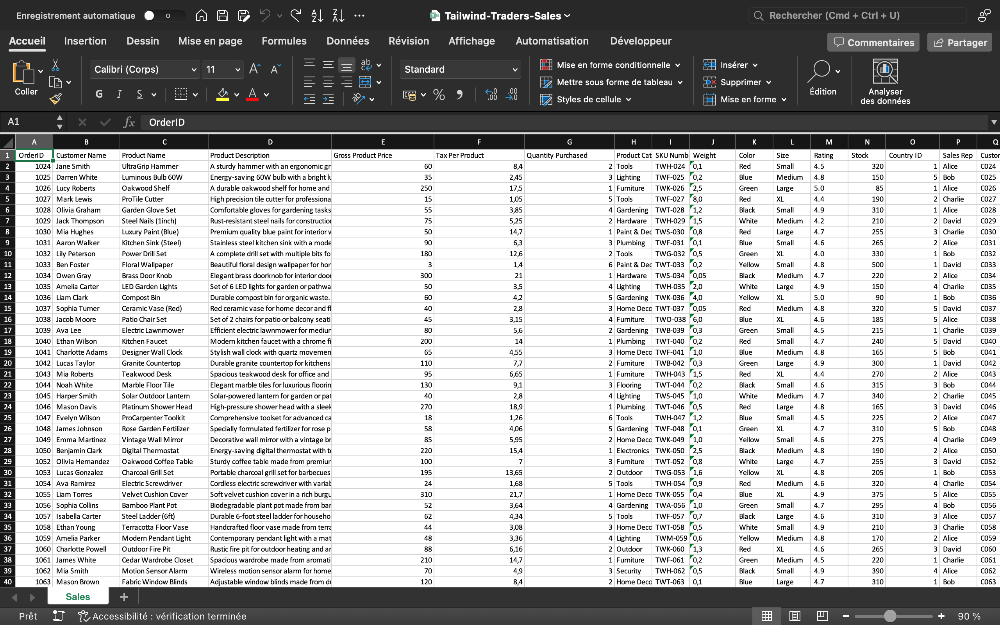
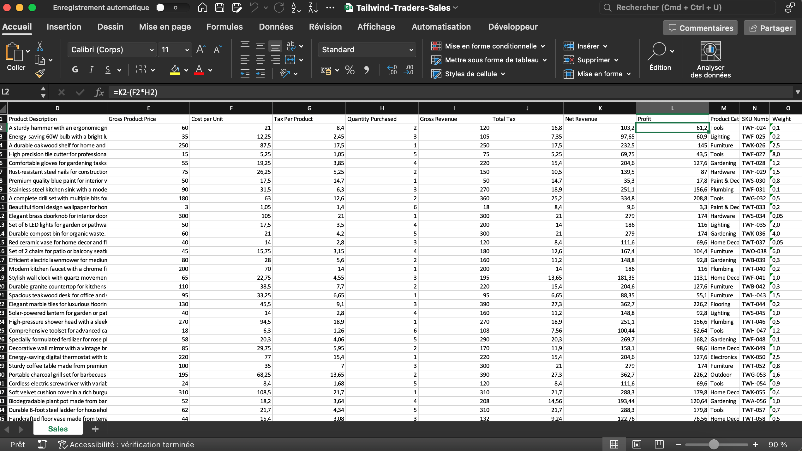
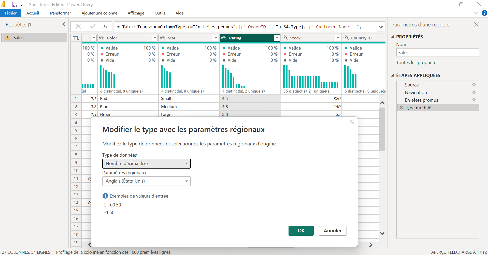
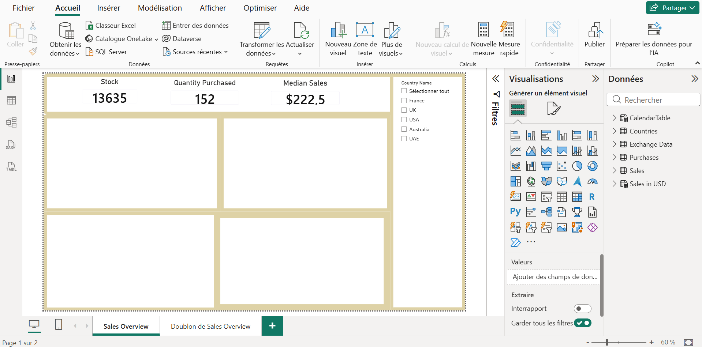
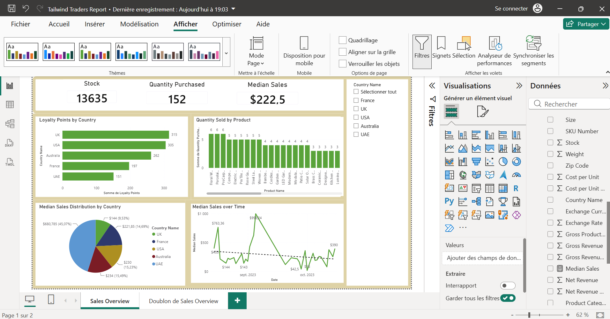
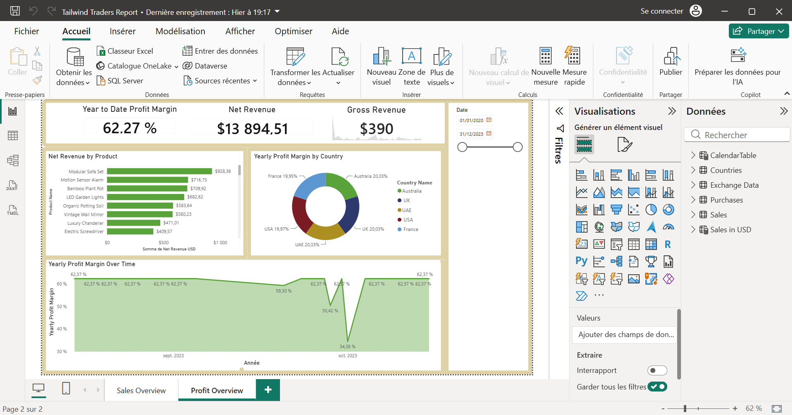

Power BI Project – Tailwind Traders: Sales & Financial Dashboard
L'OBJECTIF
Pour ce projet complet, j’ai décidé de travailler sur un cas pratique d'entreprise pour la société Tailwind Traders. L'objectif principal est de structurer, nettoyer et modéliser des données de ventes et d'approvisionnement afin de concevoir deux dashboards interactifs : un suivi des ventes (Sales Overview) et un suivi de la rentabilité (Profit Overview). Même si le projet initial ne demandait pas de recommandations, j'ai choisi de pousser l'exercice plus loin en analysant les résultats pour répondre à une problématique business concrète et en dégager des axes d'amélioration.
OUTILS & TECHNOLOGIES
| Plateformes | Microsoft Excel, Microsoft Power BI Desktop |
| Codes & Langages | DAX (Data Analysis Expressions), Python |
| Librairies & Outils | Power Query, Pandas (Python), Performance Analyzer |
LA DATA
Les données fournies couvrent une période allant de 2020 à 2023. On y retrouve des informations très variées telles que le prix des produits, les quantités achetées, les taxes appliquées, les catégories d'articles, les informations de livraison, les garanties, ainsi que les pays concernés par les transactions et leurs devises associées. Afin de pouvoir exploiter correctement ces données, j'ai commencé par enrichir et préparer le fichier des ventes sous Excel.

NETTOYAGE DE DONNÉES
Dans un premier temps, j'ai ouvert le fichier des ventes pour y ajouter des indicateurs financiers indispensables. J'ai créé les colonnes "Cost per Unit" (avec la formule =E2*0.35 pour estimer le coût de revient à 35% du prix brut), "Gross Revenue" (=E2*H2), "Total Tax" (=G2*H2), "Net Revenue" (=I2-J2) et enfin la colonne "Profit" avec la formule =K2-(F2*G2). En observant les dix premières lignes, on remarque déjà des tendances : la perceuse électrique (Power Drill Set) affiche le montant le plus élevé, tandis que le papier peint floral génère le revenu net le plus bas. J'ai également constaté qu'Alice était la représentante commerciale la plus active sur cet échantillon.

INTÉGRATION DANS POWER BI / QUERY
Une fois cette préparation terminée, j'ai importé mes différents fichiers (Ventes, Achats, Pays) dans Power BI et je suis passé dans Power Query pour optimiser les types de données. J'ai configuré les identifiants et les volumes en nombres entiers, et toutes les colonnes monétaires en nombres décimaux fixes pour éviter les erreurs d'arrondi. Pour la table des achats, j'ai validé la colonne de statut des retours et appliqué un filtre pour ne garder que les produits non retournés afin de ne pas fausser l'analyse. Enfin, j'ai intégré dynamiquement des taux de change historiques via un script Python avec la bibliothèque pandas, ce qui m'a permis de récupérer proprement les équivalences entre le dollar, l'euro, la livre sterling et d'autres devises.


RELATION DES TABLES
Après l'étape Power Query, je me suis rendu dans la vue modèle pour concevoir mes relations. Contrairement à un projet à table unique, j'ai ici structuré un vrai modèle relationnel. J'ai lié la table des pays à celle des devises en 1:1 bi-directionnel, puis j'ai connecté les ventes aux pays en Many-to-One (∗:1). J'ai aussi lié les achats aux ventes en 1:1 via l'identifiant de commande. Pour l'analyse temporelle, j'ai généré une table calendrier en DAX couvrant les années 2020 à 2023, connectée aux achats. Enfin, j'ai créé une table calculée globale "Sales in USD" pour convertir l'intégralité des transactions dans une devise unique grâce à la fonction RELATED. Toutes les relations clés ont été configurées en bi-directionnel pour assurer la fluidité des filtres.


CRÉATION DU DASHBOARD
Pour la phase visuelle, j'ai cherché à créer une disposition homogène et épurée sur mes deux pages de rapport. J'ai positionné des bannières en haut pour accueillir mes indicateurs clés sous forme de cartes. Sur le premier dashboard, j'ai disposé un menu de filtres à droite permettant de segmenter les graphiques par pays. Avant de concevoir les visuels, j'ai créé mes mesures en DAX pour calculer la marge bénéficiaire annuelle (en divisant la somme des profits par la somme des revenus nets), mais aussi la marge trimestrielle et la marge cumulée (YTD) via des fonctions d'intelligence temporelle. J'ai aussi calculé une mesure de vente médiane pour identifier le niveau de performance standard sans qu'il soit biaisé par des valeurs extrêmes. Avant la publication, j'ai testé mes visuels avec le Performance Analyzer, confirmant un temps de chargement optimal inférieur à 200 ms.

VISUELS ET CHIFFRES
Sur le premier dashboard dédié aux ventes (Sales Overview), on observe un stock global de 13 635 unités et une valeur de vente médiane solide qui s'établit à 222,50 $. Le premier graphique en barres montre que le Royaume-Uni (UK) domine nettement le programme de fidélité avec 315 points, suivi de près par les USA (305) et l'Australie (282). En analysant le graphique des volumes par produit, on constate que le papier peint floral et les pots en porcelaine sont les plus vendus en quantité (6 unités chacun). Enfin, le graphique d'évolution temporelle met en évidence une forte instabilité à l'automne 2023 : après des pics importants en septembre, les ventes s'effondrent brutalement en octobre pour atteindre un point bas historique à 42,50 $, avant de remonter à 390 $.
Sur le deuxième dashboard axé sur la rentabilité (Profit Overview), les cartes affichent un revenu net total de 13 894,51 $ et une excellente marge bénéficiaire globale de 62,27 %. Le graphique en barres des produits nous indique que c'est le canapé modulable (Modular Sofa Set) qui génère le plus gros revenu net (926,36 $), suivi par l'alarme à détecteur de mouvement. Le graphique en anneau révèle quant à lui une répartition parfaite de la marge par pays, chacun pesant équitablement pour environ 20 % du total. C'est en observant le dernier graphique sur l'évolution de la marge dans le temps que l'on détecte une anomalie majeure : alors que la marge reste plate et stable à 62,37 % presque toute l'année, elle subit une chute critique et brutale au cours du mois d'octobre 2023, s'écrasant à 34,58 % avant de se rétablir immédiatement.


DIAGNOSTIC BUSINESS
En ce qui concerne les chiffres et le diagnostic business, ce croisement de données révèle un problème urgent en octobre 2023. La baisse simultanée du volume des ventes (42,50 $) et l'effondrement de moitié du taux de marge (34,58 %) prouvent que l'entreprise a fait face soit à une hausse massive et imprévue des coûts logistiques/fournisseurs non répercutée, soit à une politique de déstockage agressive à perte. Pour y remédier, il est indispensable d'auditer les contrats fournisseurs et de sécuriser les prix d'achat. Par ailleurs, bien que le Royaume-Uni et les USA soient nos clients les plus engagés (meilleurs scores de fidélité et fortes ventes médianes), ils ne dégagent pas plus de marge que les autres pays (bloqués à 20 %). Il faut donc revoir la stratégie marketing sur ces zones en poussant des produits à plus forte valeur ajoutée, comme le mobilier premium, et optimiser la gestion des stocks de nos 13 635 unités en réduisant l'espace alloué aux produits de faible valeur.